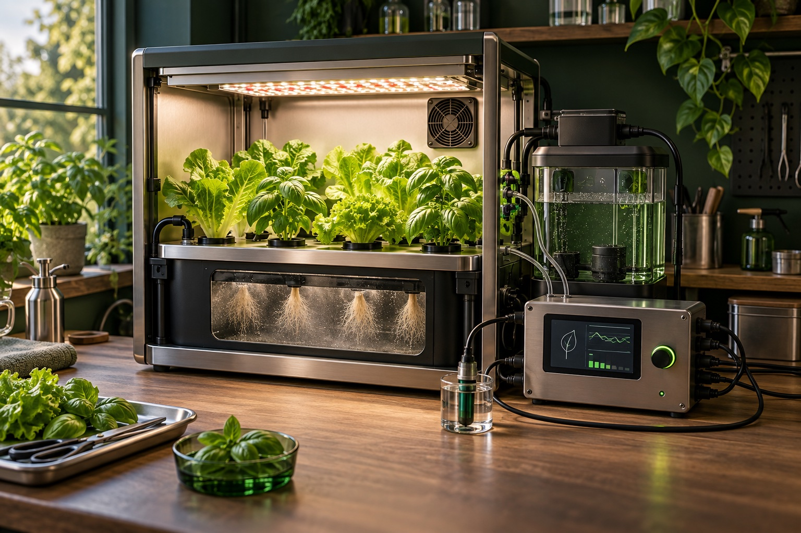
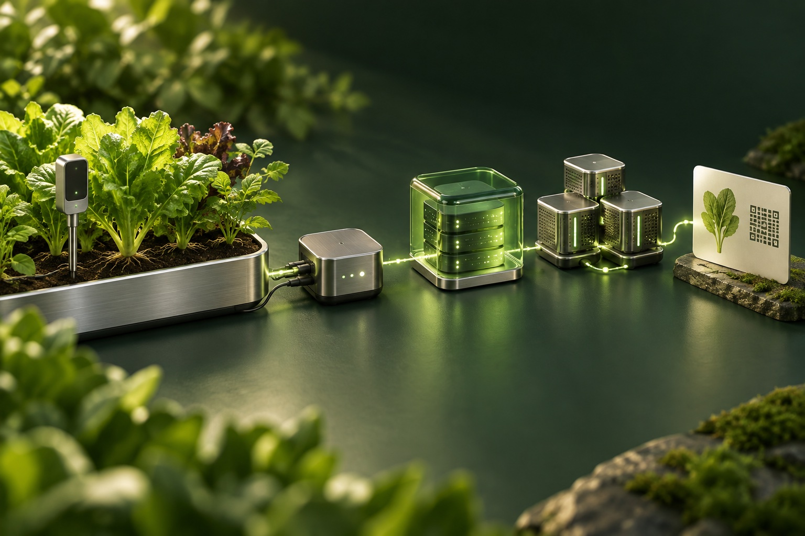
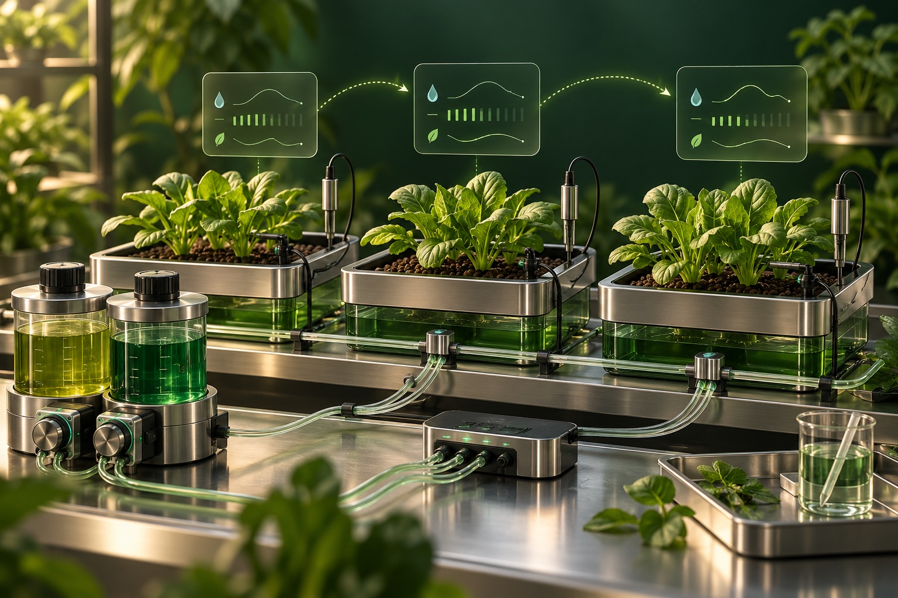
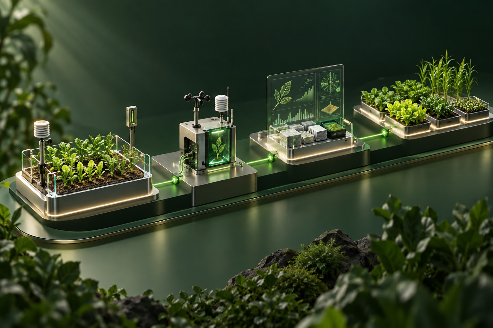

Cultivar con mayor visibilidad
La capa de monitorización propuesta reuniría lecturas de temperatura, humedad, luz, pH y nutrientes para ayudar a evaluar las condiciones de cultivo.
Agrotecnología / I+D personal
De las raíces a los registros. Descubre Leafcoin, el concepto de I+D agrotecnológica de Ilya Papou que combina aeroponía, IoT, calibración con ML y registros verificables de cultivo.
A partir de un laboratorio doméstico de aeroponía, la investigación explora cómo los datos de cultivo podrían orientar el riego, la calibración de nutrientes y la trazabilidad de los registros.

Producción real.
Evidencia útil.
Para que un activo digital represente algo significativo, primero debe poder observarse la producción que lo sustenta. Leafcoin parte de las condiciones de cultivo, sus registros y la calidad de los datos.

La capa de monitorización propuesta reuniría lecturas de temperatura, humedad, luz, pH y nutrientes para ayudar a evaluar las condiciones de cultivo.
Un pasaporte de producto propuesto vincularía el origen de las semillas, las condiciones de cultivo, los ciclos y los registros de cosecha, con acceso mediante un código QR.
La capa de verificación propuesta registraría huellas digitales de los informes en un libro mayor para comprobar si un informe registrado ha cambiado.
Leafcoin se presenta como un concepto y un proyecto personal de I+D. Los materiales públicos del laboratorio documentan prototipos históricos. La arquitectura y la hoja de ruta describen trabajo propuesto; estos materiales no permiten establecer el estado de implementación más allá de lo documentado.
De una lectura
a un registro verificable.
La arquitectura propuesta separa la recopilación de datos, el almacenamiento fuera de la cadena y la comprobación de integridad mediante un libro mayor. La telemetría sin procesar permanecería fuera de la cadena, mientras que el libro mayor almacenaría hashes de los informes.

La capa de recopilación propuesta añadiría marcas de tiempo a las lecturas y las transmitiría mediante MQTT, conservando el contexto del dispositivo y del ciclo de cultivo. Los controles de calidad señalarían muestras ausentes, valores atípicos y problemas de calibración antes de utilizar las lecturas en informes o en la evaluación de modelos.
El diseño propuesto almacenaría la telemetría sin procesar fuera de la cadena, en un repositorio con control de acceso, y registraría hashes de los informes en un libro mayor. Un hash coincidente puede indicar que un informe no ha cambiado desde su registro; no demuestra la precisión de las lecturas de los sensores.
Se considera Besu con consenso QBFT como una opción de red EVM con permisos. La participación en la red, la gobernanza de los validadores, la operación y el diseño de la verificación requerirían evaluación.
Los permisos y el consenso no garantizan por sí solos la confidencialidad de las transacciones. La visibilidad de los datos, los controles de acceso y cualquier mecanismo de confidencialidad necesitarían diseño y validación independientes.
La línea de investigación incluye evaluar modelos de ML para pronósticos y recomendaciones de cultivo a partir de datos validados, con revisión humana antes de realizar cambios. El versionado de los conjuntos de datos y de los modelos facilitaría el análisis de las recomendaciones.
Un pasaporte de lote propuesto reuniría el origen de las semillas, las condiciones de cultivo, los registros de nutrientes, las fechas de los ciclos y el historial de cosecha. Los registros que podrían compartirse y sus destinatarios dependerían de reglas de acceso definidas y validadas para la implementación.
El concepto explora si los registros verificables de producción podrían respaldar servicios vinculados a activos. El diseño del token, los derechos sobre los activos, la custodia, la valoración y el reembolso son cuestiones de investigación.
La viabilidad de cualquier integración financiera requeriría evaluar las normas aplicables, las responsabilidades y las autorizaciones necesarias. Los materiales presentados no permiten establecer el estado de las alianzas, inversiones o aprobaciones.
Observar.
Ajustar. Repetir.
Un ciclo de investigación propuesto utilizaría iteraciones de cultivo repetidas para evaluar los programas de riego y la composición de la solución nutritiva según las respuestas observadas en las plantas.

Cada experimento registraría la receta de la solución, la dosificación, los intervalos y la duración del riego, el pH, la conductividad eléctrica, la temperatura del agua, las condiciones y la etapa del cultivo. Las observaciones de las plantas y los resultados aportarían contexto para la comparación.
Se podrían evaluar modelos de ML para sugerir pequeños cambios en los parámetros de riego y la composición de la solución. Una persona revisaría cada propuesta dentro de límites experimentales predefinidos antes de iniciar otra iteración.
Las iteraciones sucesivas compararían las predicciones con las respuestas observadas en condiciones comparables. Se reservarían iteraciones posteriores para la validación y se conservarían las versiones de recetas, parámetros y modelos para poder rastrear los resultados.
Esta es una línea de investigación propuesta. Se necesitarían mediciones y experimentos repetidos para establecer la calidad de los modelos y unos límites de operación útiles. La calibración de los sensores seguiría siendo un requisito independiente.
Construir por etapas.
Validar cada paso.
Una secuencia de investigación propuesta. Cada etapa requeriría validación; aquí no se indican estados de finalización ni fechas de lanzamiento.

Conectar un cultivo piloto, validar las lecturas y crear vistas de monitorización. Probar las huellas digitales de los informes y un pasaporte de lote básico.
Validar: cobertura de sensores, calidad de datos y verificación de registros.
Evaluar pronósticos y recomendaciones frente a los resultados de cultivo registrados. Mantener el control humano de los cambios de cultivo.
Validar: calidad del modelo, reproducibilidad y revisión humana.
Investigar servicios vinculados a activos y requisitos de los socios. Definir responsabilidades legales y derechos de los usuarios antes de crear flujos financieros.
Validar: viabilidad, alcance de los socios y marco regulatorio.
Ampliar el sistema solo cuando el piloto sea útil y repetible. Adaptar la monitorización y los modelos a nuevas instalaciones y cultivos.
Validar: operaciones repetibles y viabilidad económica por unidad.
El trabajo
detrás de la idea.
El concepto nació de Home Aeroponics, un laboratorio personal de IoT y automatización. Sus repositorios públicos conservan parte de ese trabajo.
Desliza o desplázate para ver las imágenes. Con la galería enfocada, utiliza las flechas izquierda y derecha, Inicio o Fin.
Capa de control
Ejemplos históricos de controladores con Python y MQTT, con contexto de monitorización e integración.
Capa de dispositivos
Experimentos archivados de Arduino para sensores, telemetría y control de relés.
Prototipo físico
Fotografías y contexto del proyecto de la instalación histórica.
Estos materiales de archivo aportan contexto al trabajo del laboratorio personal. No permiten establecer el estado de implementación del concepto Leafcoin en su conjunto. Los repositorios documentan las limitaciones de compilación, ejecución y hardware.
Creador del concepto
Ingeniero Platform / SRE · I+D personal
Comprender las raíces.
Evaluar el sistema.
Descubre cómo funciona la aeroponía, en qué aspectos puede mejorar otros métodos de cultivo y qué hace fiable a un sistema. Cuatro guías con fuentes de investigación y ventajas e inconvenientes prácticos.
01 / Fundamentos
Descubre cómo la aeroponía alimenta raíces suspendidas con una neblina nutritiva, qué contiene un sistema y en qué se diferencia de la hidroponía y la agricultura vertical.
02 / Comparación
Compara la aeroponía con NFT y el cultivo en agua profunda: oxígeno en las raíces, uso de agua, mantenimiento, respuesta ante fallos y resultados de los ensayos.
03 / Control y aprendizaje
Comprende los fallos de las boquillas, los tiempos de riego, el pH y la CE, la deriva de los sensores y un ciclo de ML propuesto para mejorar las decisiones de riego y nutrientes mediante ensayos.
04 / Agricultura del futuro
Explora la aeroponía en la propagación, el cultivo controlado y la agricultura basada en datos, con límites realistas de energía, mantenimiento, costes y escala.